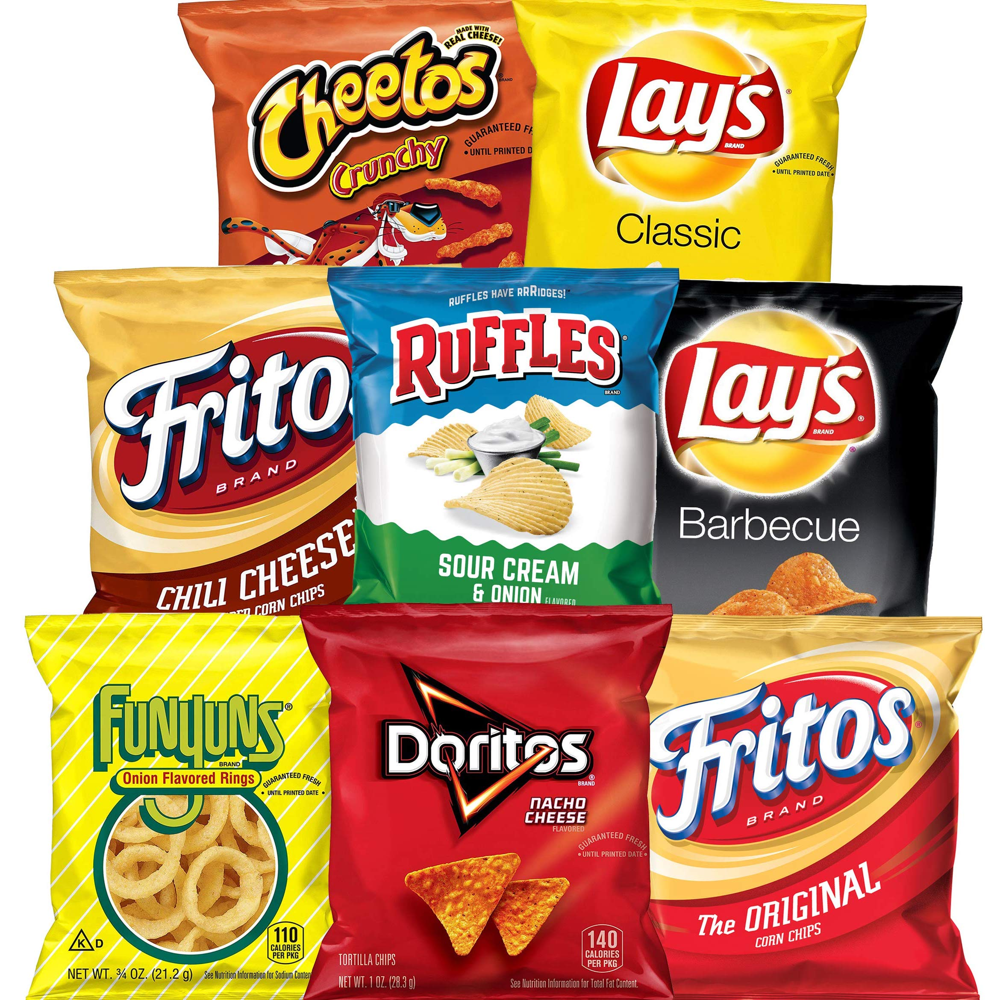
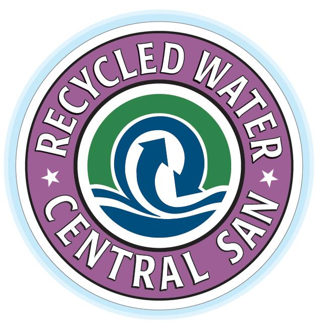

Product & Sales Coordinator
Anatomage
October 2017
Present
At Anatomage, I went above and beyond nurturing clients throughout the entire sales cycle. I processed around $400,000 monthly in orders but ended up spending most of my time optimizing and automating our sales process on Salesforce. I got my Salesforce Admin certification and became one of only two SFDC gurus at my company. While onboarding users and troubleshooting UX requests, I also wrote Visualforce pages and Apex classes to streamline communication & clean data.
Academic Tutor
AJ Tutoring
September 2017
June 2018
As an academic tutor, being likable with high school students was the easy part; knowing your subject in and out and being able to communicate technical concepts to a non-technical person was the challenge. By constantly using catered analogies and applications to real-world concepts, I ended up helping many of my students not only go from C's to A's, but also becoming interested in the subject.
Supply Chain Management Intern
Frito-Lay

June 2016
Septemper 2016
Understanding how a business runs in a Fortune 500 company isn't easy. But that's exactly what my project entailed—improving the store door value(SDV) of our distribution center by increasing awareness of both sides of the business. To fully understand the
Recycled Water Program Coordinator
Central Contra Costa Sanitary District

January 2016
June 2016
Amidst the zenith of the California drought, I was fortunate enough to be able to manage CCCSD's recycled water program during my 6 month co-op. From settings users up with the program to community outreach, I was able to analyze and report on the participant data during one their busiest seasons. Program aside, I also helped draft various construction projects along with cost estimates to determine the scope and financial viability of said projects.
Music Director
Lounge Lizards
September 2015
June 2016
I sung a cappella (no instruments) for all my 5 years in college. During my fourth year, I rose up to the occasion and became the Music Director of the group responsible for teaching the music and bringing it all together in a harmonious melody. In all honesty, it was a rocky start for both the group and myself because the board of officers was entirely new. But by the end of it all, I had unified the group, boosted morale and learned more than just a few lessons about leadership and inspiration for myself.